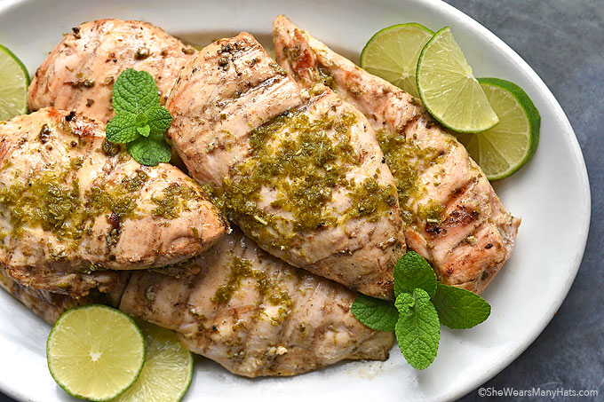

Mint Chicken

Description
This mint chicken recipe is a delicious and easy way to prepare chicken. The mint and lime add a refreshing flavor to the chicken, making it perfect for a light and healthy meal. Serve the mint chicken with rice or a salad for a complete meal that the whole family will love.
Ingredients
- 4 boneless, skinless chicken breasts
- 1/4 cup fresh mint leaves, chopped
- 1/4 cup fresh lime juice
- 2 tablespoons olive oil
- 2 cloves garlic, minced
- 1 teaspoon salt
- 1/2 teaspoon black pepper
Instructions
- In a small bowl, whisk together the mint, lime juice, olive oil, garlic, salt, and pepper.
- Place the chicken breasts in a resealable plastic bag and pour the marinade over the chicken.
- Seal the bag and refrigerate for at least 30 minutes, or up to 4 hours.
- Preheat the grill to medium-high heat.
- Remove the chicken from the marinade and discard the marinade.
- Grill the chicken for 6-7 minutes per side, or until cooked through.
- Remove the chicken from the grill and let it rest for 5 minutes before serving.